Trajectory analysis - Lung (Optimised Reference)
Calandra Grima
2026-09-28
Last updated: 2026-09-28
Checks: 7 0
Knit directory: amniosinglecell/
This reproducible R Markdown analysis was created with workflowr (version 1.7.2). The Checks tab describes the reproducibility checks that were applied when the results were created. The Past versions tab lists the development history.
Great! Since the R Markdown file has been committed to the Git repository, you know the exact version of the code that produced these results.
Great job! The global environment was empty. Objects defined in the global environment can affect the analysis in your R Markdown file in unknown ways. For reproduciblity it’s best to always run the code in an empty environment.
The command set.seed(20220125) was run prior to running
the code in the R Markdown file. Setting a seed ensures that any results
that rely on randomness, e.g. subsampling or permutations, are
reproducible.
Great job! Recording the operating system, R version, and package versions is critical for reproducibility.
Nice! There were no cached chunks for this analysis, so you can be confident that you successfully produced the results during this run.
Great job! Using relative paths to the files within your workflowr project makes it easier to run your code on other machines.
Great! You are using Git for version control. Tracking code development and connecting the code version to the results is critical for reproducibility.
The results in this page were generated with repository version 64ca8b7. See the Past versions tab to see a history of the changes made to the R Markdown and HTML files.
Note that you need to be careful to ensure that all relevant files for
the analysis have been committed to Git prior to generating the results
(you can use wflow_publish or
wflow_git_commit). workflowr only checks the R Markdown
file, but you know if there are other scripts or data files that it
depends on. Below is the status of the Git repository when the results
were generated:
Ignored files:
Ignored: .DS_Store
Ignored: .Rhistory
Ignored: .Rproj.user/
Ignored: analysis/generate_site.R
Ignored: analysis/knit_docs.R
Ignored: analysis/run_as_job.R
Ignored: analysis/sccomp_draws_files/
Ignored: celltypist/output_Gerli_et_al_2024_fetal_organ/
Ignored: celltypist/output_Gerli_et_al_2024_pan_fetal/
Ignored: data/
Ignored: excluded_analysis/
Ignored: output/
Ignored: renv/.DS_Store
Ignored: renv/library/
Ignored: renv/staging/
Ignored: sccomp_draws_files/
Untracked files:
Untracked: AmnioSC_Manuscript_Claude/
Untracked: claude_log/
Unstaged changes:
Modified: analysis/AmnioSC_additional_main_figures.Rmd
Modified: analysis/AmnioSC_additional_supp_figures.Rmd
Note that any generated files, e.g. HTML, png, CSS, etc., are not included in this status report because it is ok for generated content to have uncommitted changes.
These are the previous versions of the repository in which changes were
made to the R Markdown
(analysis/AmnioSC_workflow_optref_trajectory_lung.Rmd) and
HTML (docs/AmnioSC_workflow_optref_trajectory_lung.html)
files. If you’ve configured a remote Git repository (see
?wflow_git_remote), click on the hyperlinks in the table
below to view the files as they were in that past version.
| File | Version | Author | Date | Message |
|---|---|---|---|---|
| html | 64ca8b7 | Calandra Grima | 2026-09-28 | Build site. |
| html | 4992536 | Calandra Grima | 2026-09-28 | Build site. |
| Rmd | 40245c8 | Calandra Grima | 2026-09-28 | wflow_publish(here("analysis", "AmnioSC_workflow_optref_trajectory_lung.Rmd")) |
| html | 267fb2b | Calandra Grima | 2026-08-05 | Build site. |
| html | 2dd269c | Calandra Grima | 2026-08-04 | Build site. |
| html | de63a43 | Calandra Grima | 2026-08-04 | Build site. |
| Rmd | 82c5386 | Calandra Grima | 2026-08-04 | wflow_publish(here("analysis", "AmnioSC_workflow_optref_trajectory_lung.Rmd")) |
1 Load libraries
library(Seurat)
library(SeuratObject)
library(monocle3)
library(ggplot2)
library(cowplot)
library(patchwork)
library(dplyr)
library(tidyverse)
library(workflowr)
library(here)
library(sessioninfo)
source(here("code", "helper_functions.R"))
source(here("code", "load_colour_schemes.R"))
RERUN_ALL <- FALSE2 Load in the integrated dataset
seu_int <- readRDS(here("data", "workflow", "AmnioSC_ALL_optimised_ref.Refined_labels.Seurat.rds"))3 Subset to the lung lineage
Trajectory inference is restricted to the lung epithelium clusters
(Cluster_10 and Cluster_12, labelled
"Lung epithelium (low confidence)" and
"Lung epithelium".
LUNG_CLUSTERS <- c("Lung epithelium (low confidence)", "Lung epithelium")
seu_int.lung <- seu_int[, seu_int$cluster_names %in% LUNG_CLUSTERS]4 Build the monocle3 cell_data_set
Following the monocle3
trajectory tutorial, the lung subset is wrapped into a
cell_data_set (cds). monocle3’s plotting
functions expect gene_metadata to contain a
gene_short_name column.
gene_metadata <- data.frame(gene_short_name = rownames(seu_int.lung[["RNA"]]@counts),
row.names = rownames(seu_int.lung[["RNA"]]@counts))
cds <- new_cell_data_set(seu_int.lung[["RNA"]]@counts,
cell_metadata = as.data.frame(seu_int.lung@meta.data),
gene_metadata = gene_metadata)5 Pre-process the data
cds <- preprocess_cds(cds, num_dim = 50)
plot_pc_variance_explained(cds)Warning: `qplot()` was deprecated in ggplot2 3.4.0.
ℹ The deprecated feature was likely used in the monocle3 package.
Please report the issue to the authors.
This warning is displayed once per session.
Call `lifecycle::last_lifecycle_warnings()` to see where this warning was
generated.Warning: The `size` argument of `element_line()` is deprecated as of ggplot2 3.4.0.
ℹ Please use the `linewidth` argument instead.
ℹ The deprecated feature was likely used in the monocle3 package.
Please report the issue to the authors.
This warning is displayed once per session.
Call `lifecycle::last_lifecycle_warnings()` to see where this warning was
generated.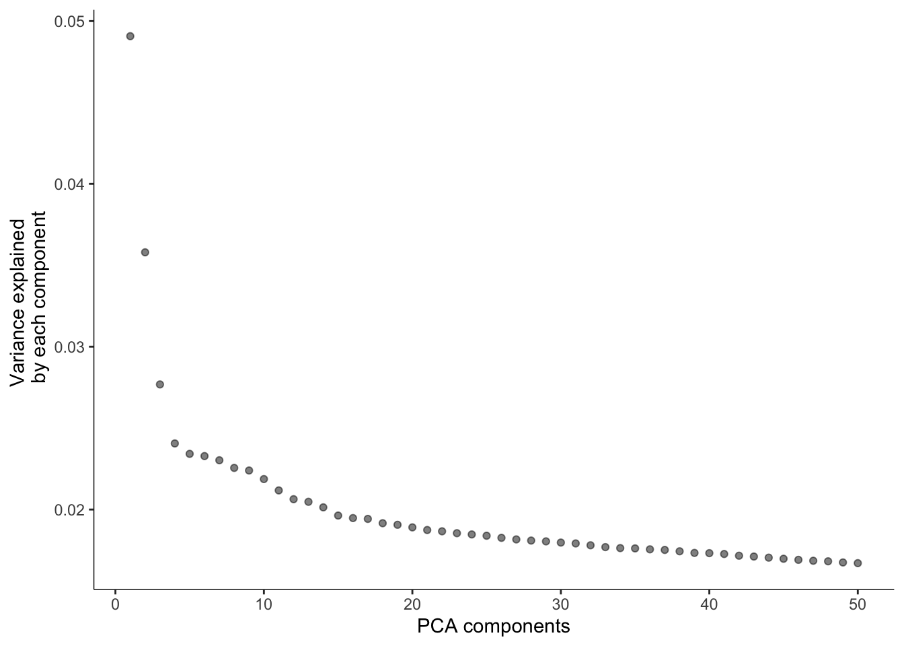
| Version | Author | Date |
|---|---|---|
| de63a43 | Calandra Grima | 2026-08-04 |
6 Dimensionality reduction and visualize the results
cds <- reduce_dimension(cds)No preprocess_method specified, using preprocess_method = 'PCA'plot_cells(cds, label_groups_by_cluster = FALSE, color_cells_by = "cluster_names")No trajectory to plot. Has learn_graph() been called yet?Warning: `aes_string()` was deprecated in ggplot2 3.0.0.
ℹ Please use tidy evaluation idioms with `aes()`.
ℹ See also `vignette("ggplot2-in-packages")` for more information.
ℹ The deprecated feature was likely used in the monocle3 package.
Please report the issue to the authors.
This warning is displayed once per session.
Call `lifecycle::last_lifecycle_warnings()` to see where this warning was
generated.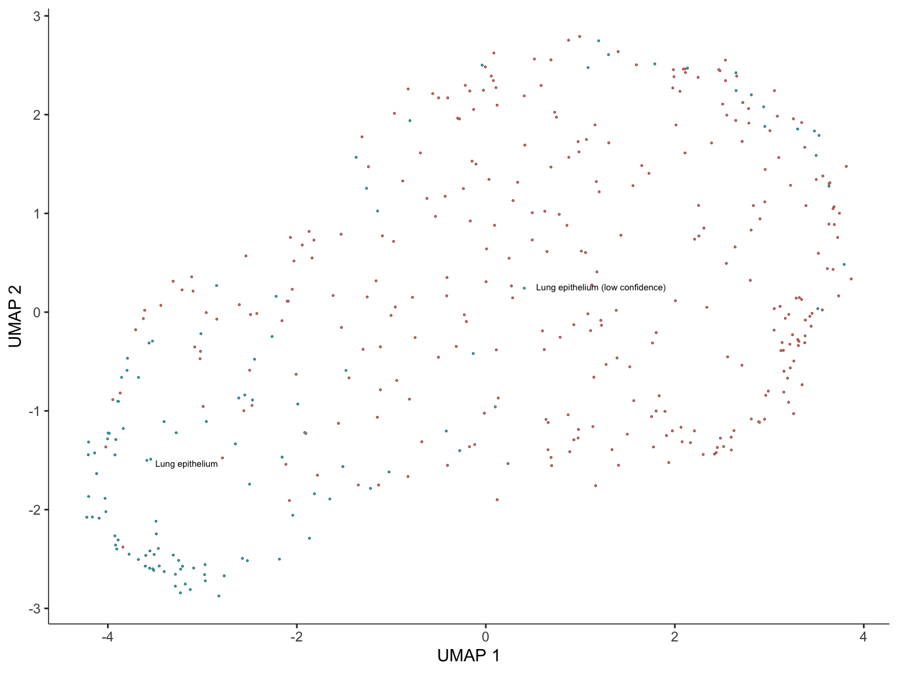
| Version | Author | Date |
|---|---|---|
| de63a43 | Calandra Grima | 2026-08-04 |
lung_marker_genes <- c("SFTPC", "SFTPB", "SFTA3", "NKX2-1", "SCGB3A2", "MECOM", "VEGFA")
lung_marker_genes <- lung_marker_genes[lung_marker_genes %in% rownames(cds)]
plot_cells(cds,
genes = lung_marker_genes,
label_cell_groups = FALSE,
show_trajectory_graph = FALSE)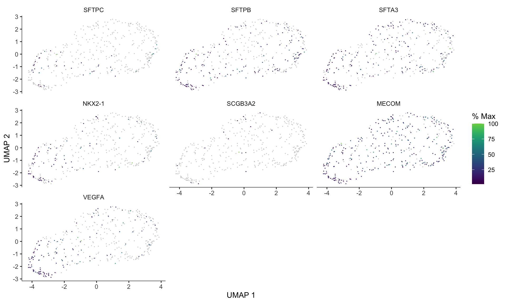
| Version | Author | Date |
|---|---|---|
| de63a43 | Calandra Grima | 2026-08-04 |
7 Cluster cells
cds <- cluster_cells(cds)
plot_cells(cds, color_cells_by = "partition")No trajectory to plot. Has learn_graph() been called yet?Cells aren't colored in a way that allows them to be grouped.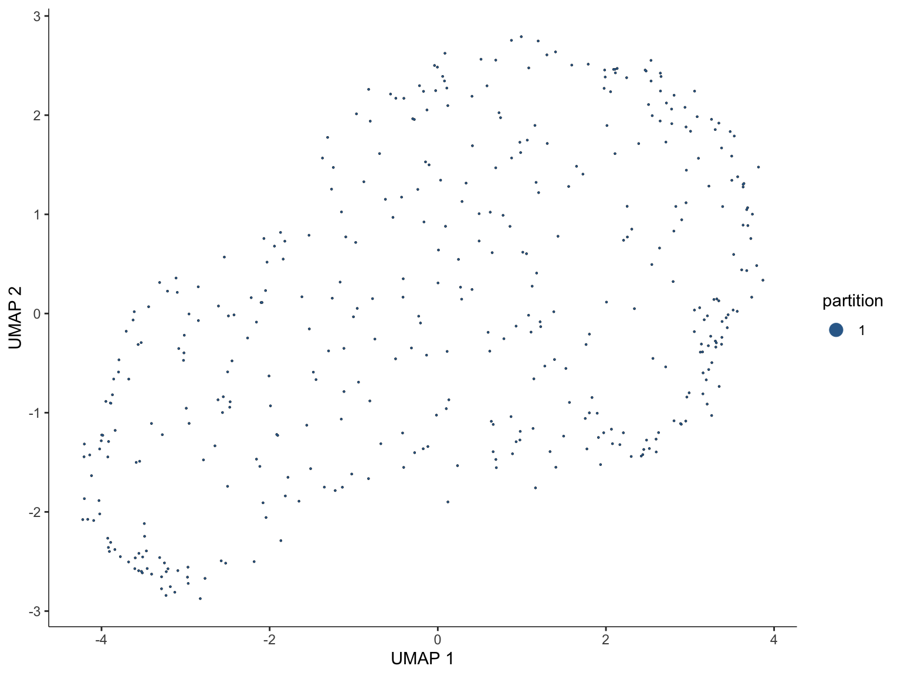
| Version | Author | Date |
|---|---|---|
| de63a43 | Calandra Grima | 2026-08-04 |
8 Learn the trajectory graph
cds <- learn_graph(cds) | | | 0% | |======================================================================| 100%plot_cells(cds,
color_cells_by = "cluster_names",
label_groups_by_cluster = FALSE,
label_leaves = FALSE,
label_branch_points = FALSE)Warning: Using `size` aesthetic for lines was deprecated in ggplot2 3.4.0.
ℹ Please use `linewidth` instead.
ℹ The deprecated feature was likely used in the monocle3 package.
Please report the issue to the authors.
This warning is displayed once per session.
Call `lifecycle::last_lifecycle_warnings()` to see where this warning was
generated.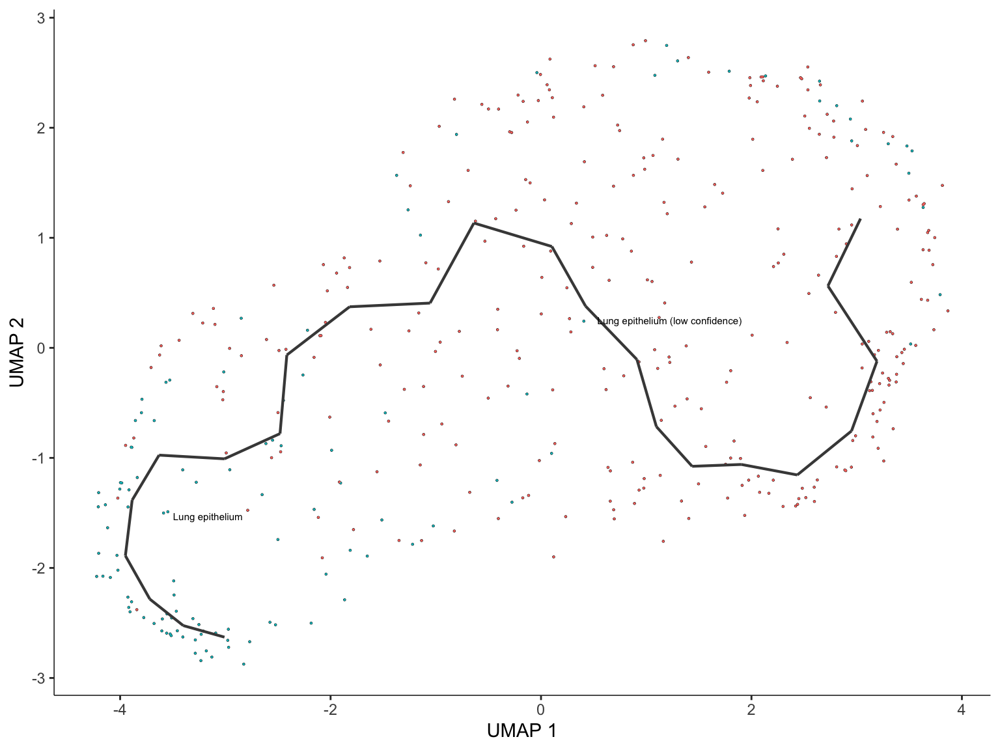
| Version | Author | Date |
|---|---|---|
| de63a43 | Calandra Grima | 2026-08-04 |
9 Order the cells in pseudotime
Cells in "Lung epithelium (low confidence)" are treated
as the least differentiated / progenitor-like state and used to root the
trajectory, following the programmatic root-finding helper from the
tutorial.
get_earliest_principal_node <- function(cds, target_cluster = "Lung epithelium (low confidence)") {
cell_ids <- which(colData(cds)[, "cluster_names"] == target_cluster)
closest_vertex <- cds@principal_graph_aux[["UMAP"]]$pr_graph_cell_proj_closest_vertex
closest_vertex <- as.matrix(closest_vertex[colnames(cds), ])
root_pr_nodes <- igraph::V(principal_graph(cds)[["UMAP"]])$name[as.numeric(names(
which.max(table(closest_vertex[cell_ids, ]))))]
root_pr_nodes
}
cds <- order_cells(cds, root_pr_nodes = get_earliest_principal_node(cds))
saveRDS(cds, here("data", "workflow", "AmnioSC.lung_pseudotime.rds"))Warning: saveRDS(cds, ...) does not save annoy or hnsw nearest
neighbor indices, which you may need for future
analyses.We urge you to use the function
save_monocle_objects()
in order to save all of the information in the cds.
See the notes in the save_monocle_objects() help
documentation for additional information.However, we are running base::saveRDS() as you requested.plot_cells(cds,
color_cells_by = "pseudotime",
label_cell_groups = FALSE,
label_leaves = FALSE,
label_branch_points = FALSE,
graph_label_size = 1.5)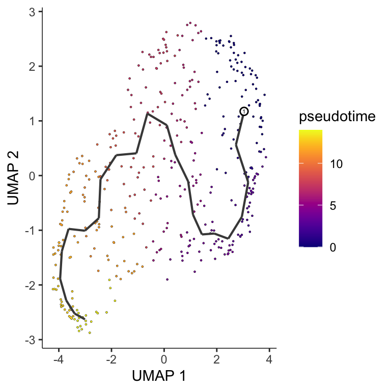
| Version | Author | Date |
|---|---|---|
| de63a43 | Calandra Grima | 2026-08-04 |
10 Pseudotime on the whole-dataset UMAP
The lung pseudotime values are mapped back onto the original
(whole-dataset) Seurat UMAP, so the lung trajectory can be seen in the
context of every other cluster. Cells outside the lung subset have no
pseudotime value and are coloured grey (na.value).
seu_int$lung_pseudotime <- NA
seu_int$lung_pseudotime[names(pseudotime(cds))] <- pseudotime(cds)FeaturePlot(seu_int, reduction = "umap", features = "lung_pseudotime") +
scale_color_viridis(option = "viridis", direction = 1, na.value = "grey85") +
blank_axes + ggtitle("Lung trajectory pseudotime")Scale for colour is already present.
Adding another scale for colour, which will replace the existing scale.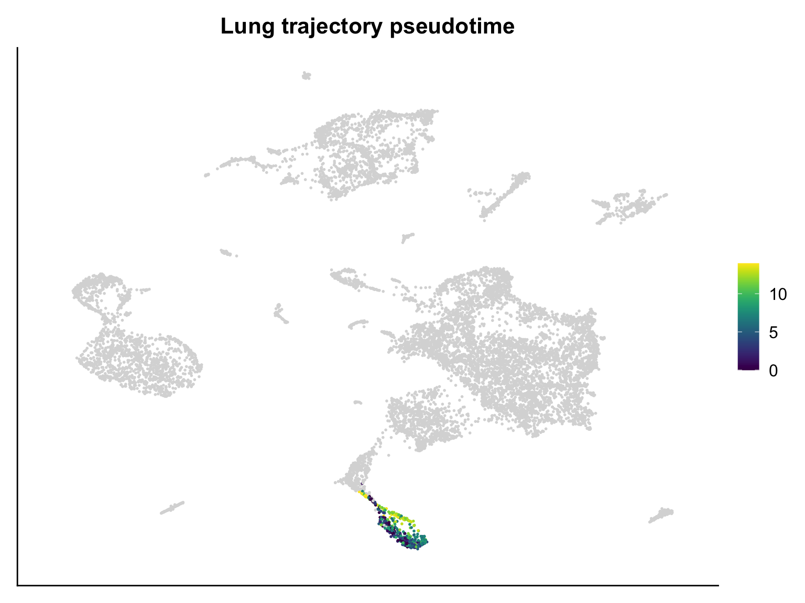
| Version | Author | Date |
|---|---|---|
| de63a43 | Calandra Grima | 2026-08-04 |
11 Genes that vary along the lung trajectory
plot_cells(cds,
genes = lung_marker_genes,
label_cell_groups = FALSE,
show_trajectory_graph = FALSE,
color_cells_by = "pseudotime")
| Version | Author | Date |
|---|---|---|
| de63a43 | Calandra Grima | 2026-08-04 |
12 Surfactant expression in fetal lung cells
# surfactant_genes <- c("SFTPA1", "SFTPA2", "SFTPB", "SFTPC", "SFTPD", "ABCA3", "NKX2-1")
lung_genes <- c("SFTPA1", "SFTPA2", "SFTPB", "SFTPC", "SFTPD", "ABCA3", "NKX2-1", "SCGB3A2", "VEGFA")
# lung_genes %in% rownames(seu_int.early_late[["RNA"]])seu_int.early_late <- seu_int[, seu_int$Donor.Paper != "AF_4"]
# following this tutorial: https://github.com/dpcook/code_snippets/blob/main/20210510_recreate_seurat_dotplot/recreate_seurat_dotplot.md
exp_mat <- as.matrix(seu_int.early_late[["RNA"]]@data[lung_genes,])
meta <- seu_int.early_late@meta.data %>% dplyr::select(refined_clusters, early_late_gestation)
meta <- bind_cols(meta, as.data.frame(t(exp_mat)))
head(meta) refined_clusters early_late_gestation SFTPA1 SFTPA2
01_1_AAACCCAAGAGCACTG-1 Cluster_06 Late 0 0
01_1_AAACGCTTCACACCGG-1 Cluster_01 Late 0 0
01_1_AAAGAACTCATCACCC-1 Cluster_06 Late 0 0
01_1_AAAGGATTCGTAACTG-1 Cluster_01 Late 0 0
01_1_AAAGGGCGTGTGGACA-1 Cluster_09 Late 0 0
01_1_AAAGGTATCGAGTGAG-1 Cluster_11 Late 0 0
SFTPB SFTPC SFTPD ABCA3 NKX2-1 SCGB3A2 VEGFA
01_1_AAACCCAAGAGCACTG-1 0 0 0 0 0 0 2
01_1_AAACGCTTCACACCGG-1 0 0 0 0 0 0 0
01_1_AAAGAACTCATCACCC-1 0 0 0 0 0 0 0
01_1_AAAGGATTCGTAACTG-1 0 0 0 0 0 0 0
01_1_AAAGGGCGTGTGGACA-1 0 0 0 0 0 0 0
01_1_AAAGGTATCGAGTGAG-1 0 0 0 0 0 0 0meta <- pivot_longer(meta, -c(refined_clusters, early_late_gestation), names_to="Gene", values_to="Expression")
head(meta)# A tibble: 6 × 4
refined_clusters early_late_gestation Gene Expression
<fct> <chr> <chr> <dbl>
1 Cluster_06 Late SFTPA1 0
2 Cluster_06 Late SFTPA2 0
3 Cluster_06 Late SFTPB 0
4 Cluster_06 Late SFTPC 0
5 Cluster_06 Late SFTPD 0
6 Cluster_06 Late ABCA3 0meta_summary <- meta %>%
group_by(refined_clusters, early_late_gestation, Gene) %>%
summarise(Avg = mean(Expression),
Pct = sum(Expression > 0) / length(Expression) * 100)`summarise()` has regrouped the output.
ℹ Summaries were computed grouped by refined_clusters, early_late_gestation,
and Gene.
ℹ Output is grouped by refined_clusters and early_late_gestation.
ℹ Use `summarise(.groups = "drop_last")` to silence this message.
ℹ Use `summarise(.by = c(refined_clusters, early_late_gestation, Gene))` for
per-operation grouping (`?dplyr::dplyr_by`) instead.meta_summary$Gene <- factor(meta_summary$Gene, levels=lung_genes)dot_plot <- ggplot(meta_summary, aes(x=Gene, y=refined_clusters)) +
geom_point(aes(size = Pct, fill = Avg), color="black", shape=21) +
scale_size("% detected", range = c(0,6)) +
scale_fill_gradientn(colours = viridisLite::plasma(100),
guide = guide_colorbar(ticks.colour = "black",
frame.colour = "black"),
name = "Average\nexpression") +
ylab("Cluster") + xlab("") +
theme_linedraw() + facet_grid(. ~ early_late_gestation) +
rotate_x_labels
dot_plot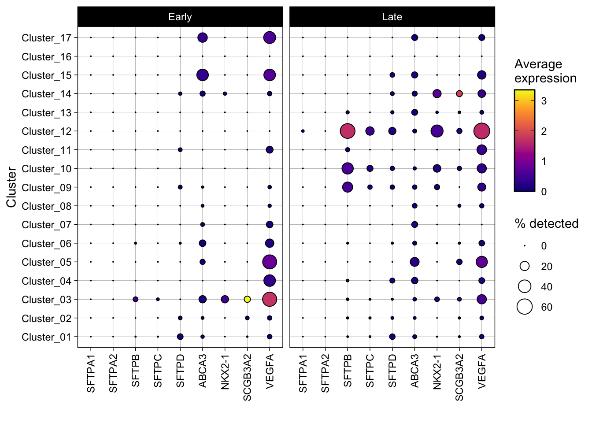
| Version | Author | Date |
|---|---|---|
| de63a43 | Calandra Grima | 2026-08-04 |
dot_plot <- ggplot(meta_summary %>% filter(refined_clusters %in% c("Cluster_10", "Cluster_12")),
aes(x=Gene, y=refined_clusters)) +
geom_point(aes(size = Pct, fill = Avg), color="black", shape=21) +
scale_size("% detected", range = c(0,6)) +
scale_fill_gradientn(colours = viridisLite::plasma(100),
guide = guide_colorbar(ticks.colour = "black",
frame.colour = "black"),
name = "Average\nexpression") +
ylab("Cluster") + xlab("") +
theme_linedraw() + facet_grid(. ~ early_late_gestation) +
rotate_x_labels
dot_plot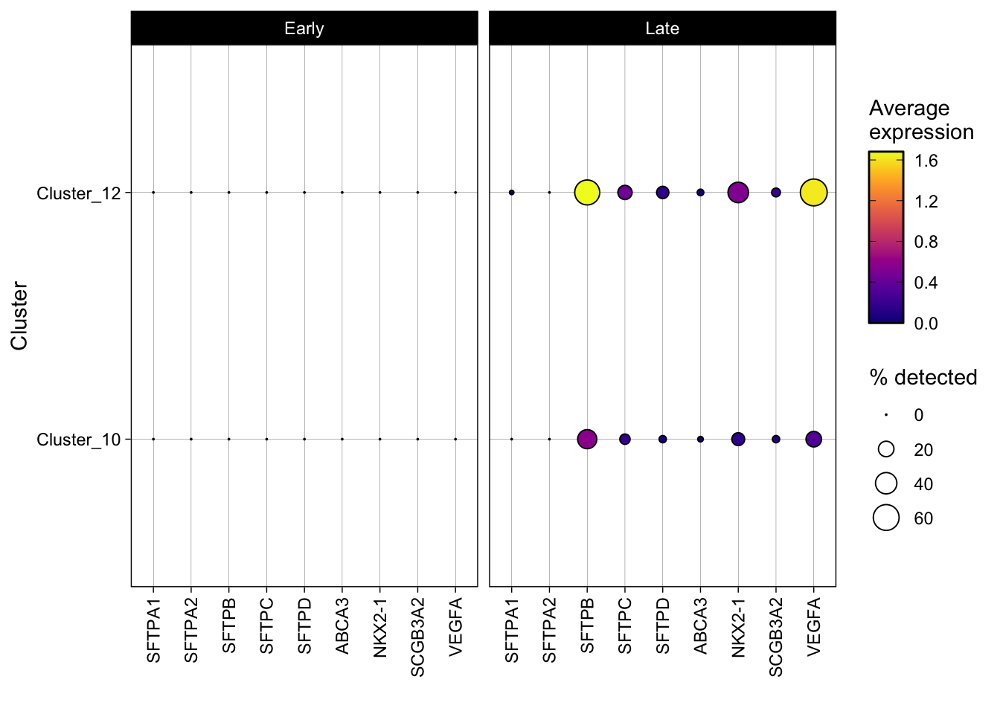
| Version | Author | Date |
|---|---|---|
| de63a43 | Calandra Grima | 2026-08-04 |
13 Try including the unknown cluster in pseudotime
13.1 Load in the integrated dataset
seu_int <- readRDS(here("data", "workflow", "AmnioSC_ALL_optimised_ref.Refined_labels.Seurat.rds"))13.2 Subset to desired cells
SELECTED_CLUSTERS <- c("Lung epithelium (low confidence)",
"Lung epithelium",
"Unknown")
seu_int.selected <- seu_int[, seu_int$cluster_names %in% SELECTED_CLUSTERS]13.3 Build the monocle3 cell_data_set
Following the monocle3
trajectory tutorial, the lung subset is wrapped into a
cell_data_set (cds). monocle3’s plotting
functions expect gene_metadata to contain a
gene_short_name column.
gene_metadata <- data.frame(gene_short_name = rownames(seu_int.selected[["RNA"]]@counts),
row.names = rownames(seu_int.selected[["RNA"]]@counts))
cds <- new_cell_data_set(seu_int.selected[["RNA"]]@counts,
cell_metadata = as.data.frame(seu_int.selected@meta.data),
gene_metadata = gene_metadata)13.4 Pre-process the data
cds <- preprocess_cds(cds, num_dim = 50)
plot_pc_variance_explained(cds)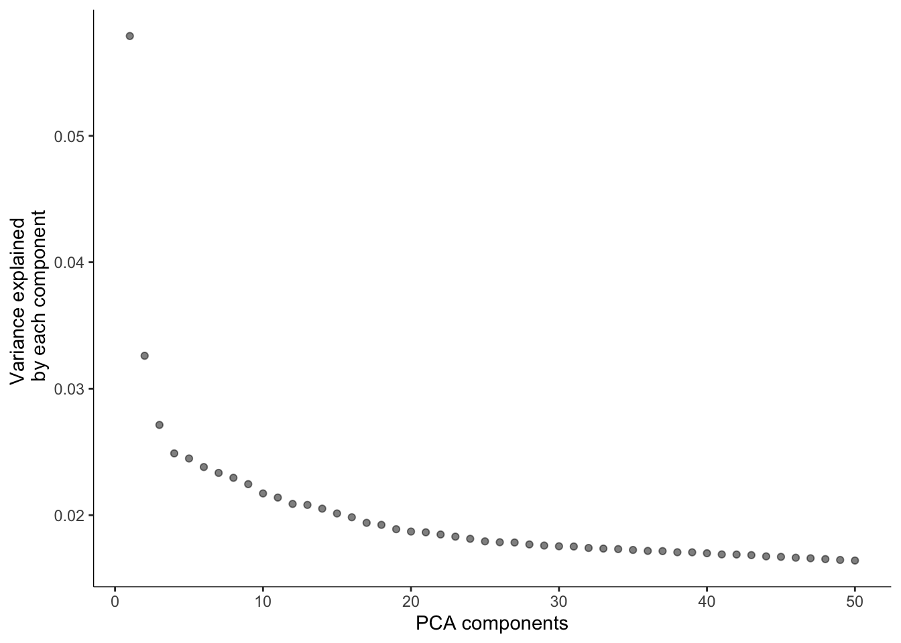
13.5 Dimensionality reduction and visualize the results
cds <- reduce_dimension(cds)No preprocess_method specified, using preprocess_method = 'PCA'plot_cells(cds, label_groups_by_cluster = FALSE, color_cells_by = "cluster_names")No trajectory to plot. Has learn_graph() been called yet?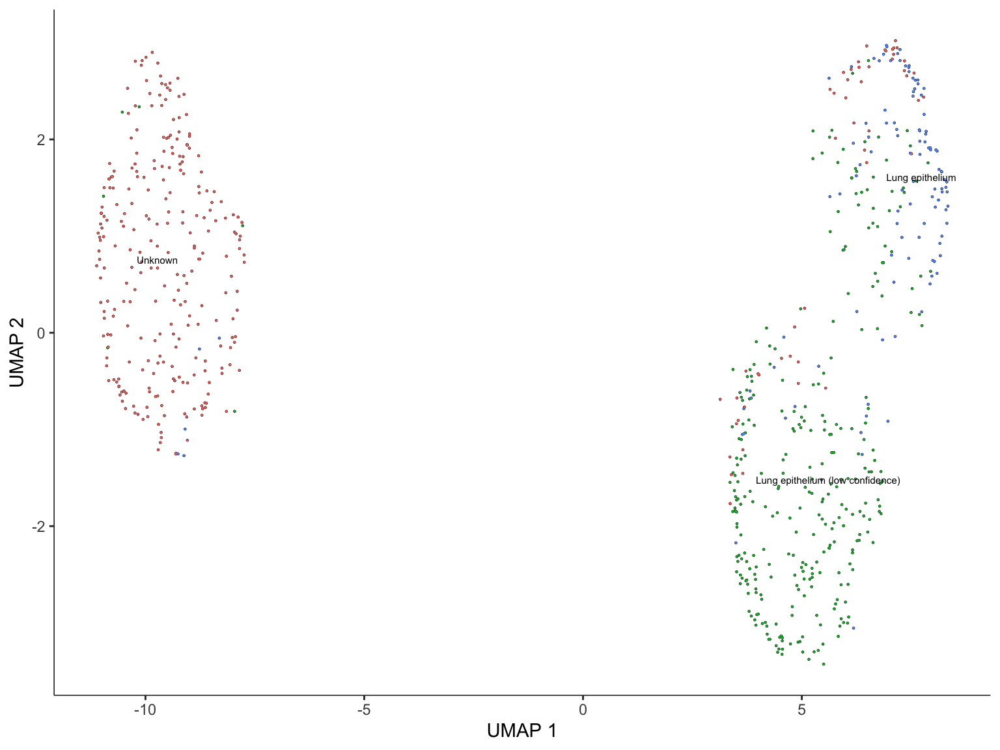
| Version | Author | Date |
|---|---|---|
| 4992536 | Calandra Grima | 2026-09-28 |
13.6 Cluster cells
cds <- cluster_cells(cds)
plot_cells(cds, color_cells_by = "partition")No trajectory to plot. Has learn_graph() been called yet?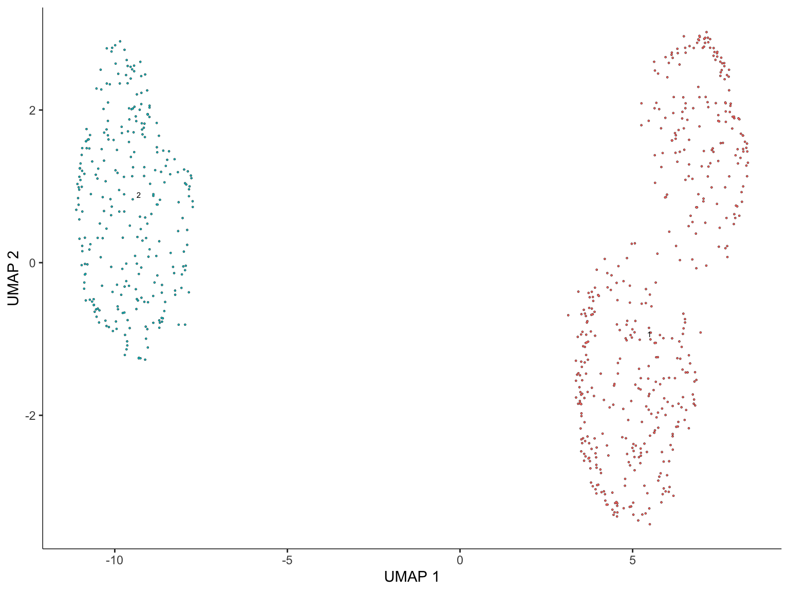
| Version | Author | Date |
|---|---|---|
| 4992536 | Calandra Grima | 2026-09-28 |
13.7 Learn the trajectory graph
cds <- learn_graph(cds) | | | 0% | |======================================================================| 100%
| | | 0% | |======================================================================| 100%plot_cells(cds,
color_cells_by = "cluster_names",
label_groups_by_cluster = FALSE,
label_leaves = FALSE,
label_branch_points = FALSE)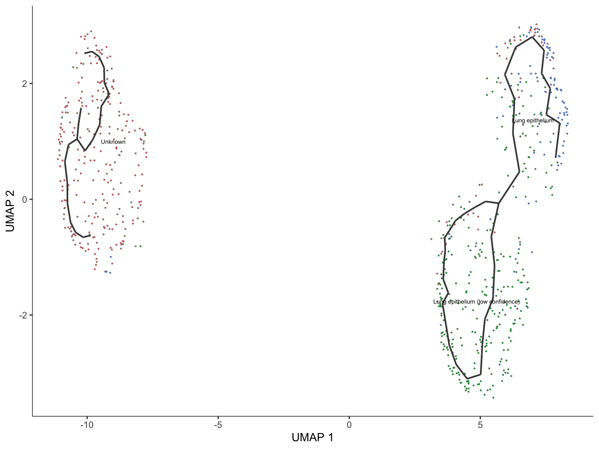
| Version | Author | Date |
|---|---|---|
| 4992536 | Calandra Grima | 2026-09-28 |
saveRDS(cds, here("data", "workflow", "AmnioSC.unknown_pseudotime.rds"))Warning: saveRDS(cds, ...) does not save annoy or hnsw nearest
neighbor indices, which you may need for future
analyses.We urge you to use the function
save_monocle_objects()
in order to save all of the information in the cds.
See the notes in the save_monocle_objects() help
documentation for additional information.However, we are running base::saveRDS() as you requested.The unknown cluster is not connected to the lung epithelium clusters.
14 Session info
sessioninfo::session_info()─ Session info ───────────────────────────────────────────────────────────────
setting value
version R version 4.5.0 (2025-04-11)
os macOS 26.6.2
system aarch64, darwin20
ui X11
language (EN)
collate en_US.UTF-8
ctype en_US.UTF-8
tz Australia/Melbourne
date 2026-09-28
pandoc 3.10 @ /Applications/RStudio.app/Contents/Resources/app/quarto/bin/tools/aarch64/ (via rmarkdown)
quarto 1.10.18 @ /Applications/RStudio.app/Contents/Resources/app/quarto/bin/quarto
─ Packages ───────────────────────────────────────────────────────────────────
! package * version date (UTC) lib source
P abind 1.4-8 2024-09-12 [?] RSPM
assertthat 0.2.1 2019-03-21 [1] RSPM (R 4.5.0)
P beachmat 2.26.0 2025-10-29 [?] Bioconduc~
P beeswarm 0.4.0 2021-06-01 [?] RSPM
P Biobase * 2.70.0 2025-10-29 [?] Bioconduc~
P BiocGenerics * 0.56.0 2025-10-29 [?] Bioconduc~
P BiocManager 1.30.27 2025-11-14 [?] RSPM
P BiocNeighbors 2.4.0 2025-10-29 [?] Bioconduc~
P BiocParallel 1.44.0 2025-10-29 [?] Bioconduc~
P BiocSingular 1.26.1 2025-11-17 [?] Bioconduc~
P bluster 1.20.0 2025-10-29 [?] Bioconduc~
P boot 1.3-31 2024-08-28 [?] CRAN (R 4.5.0)
P bslib 0.10.0 2026-01-26 [?] RSPM
P cachem 1.1.0 2024-05-16 [?] RSPM
P callr 3.7.6 2024-03-25 [?] CRAN (R 4.5.0)
P cli 3.6.6 2026-04-09 [?] RSPM
P cluster 2.1.8.1 2025-03-12 [?] CRAN (R 4.5.0)
P codetools 0.2-20 2024-03-31 [?] CRAN (R 4.5.0)
colorspace 2.1-2 2025-09-22 [1] RSPM (R 4.5.0)
P cowplot * 1.2.0 2025-07-07 [?] RSPM
P data.table 1.18.2.1 2026-01-27 [?] RSPM
DelayedArray 0.36.1 2026-03-31 [1] https://bioc-release.r-universe.dev (R 4.5.3)
P DelayedMatrixStats 1.32.0 2025-10-29 [?] Bioconduc~
P deldir 2.0-4 2024-02-28 [?] RSPM
P digest 0.6.39 2025-11-19 [?] RSPM
dplyr * 1.2.0 2026-02-03 [1] RSPM (R 4.5.0)
P dqrng 0.4.1 2024-05-28 [?] CRAN (R 4.5.0)
P edgeR 4.8.2 2025-12-23 [?] https://bioc-release.r-universe.dev (R 4.5.2)
P egg * 0.4.5 2019-07-13 [?] RSPM
P evaluate 1.0.5 2025-08-27 [?] RSPM
P farver 2.1.2 2024-05-13 [?] RSPM
P fastmap 1.2.0 2024-05-15 [?] RSPM
P fitdistrplus 1.2-6 2026-01-24 [?] RSPM
P forcats * 1.0.1 2025-09-25 [?] RSPM
P fs 2.1.0 2026-04-18 [?] RSPM
P future 1.69.0 2026-01-16 [?] RSPM
P future.apply 1.20.1 2025-12-09 [?] RSPM
P generics * 0.1.4 2025-05-09 [?] CRAN (R 4.5.0)
P GenomicRanges * 1.62.1 2025-12-08 [?] Bioconduc~
P getPass 0.2-4 2023-12-10 [?] CRAN (R 4.5.0)
P ggalluvial * 0.12.5 2023-02-22 [?] RSPM
P ggbeeswarm * 0.7.3 2025-11-29 [?] RSPM
P ggplot2 * 4.0.2 2026-02-03 [?] RSPM
P ggrepel 0.9.6 2024-09-07 [?] CRAN (R 4.5.0)
P ggridges 0.5.7 2025-08-27 [?] RSPM
P git2r 0.36.2 2025-03-29 [?] CRAN (R 4.5.0)
P globals 0.19.0 2026-02-02 [?] RSPM
P glue 1.8.0 2024-09-30 [?] RSPM
P goftest 1.2-3 2021-10-07 [?] CRAN (R 4.5.0)
P gridExtra * 2.3 2017-09-09 [?] RSPM
P gtable 0.3.6 2024-10-25 [?] RSPM
P here * 1.0.2 2025-09-15 [?] RSPM
P hms 1.1.4 2025-10-17 [?] RSPM
P htmltools 0.5.9 2025-12-04 [?] RSPM
P htmlwidgets 1.6.4 2023-12-06 [?] RSPM
P httpuv 1.6.16 2025-04-16 [?] CRAN (R 4.5.0)
P httr 1.4.7 2023-08-15 [?] RSPM
P ica 1.0-3 2022-07-08 [?] CRAN (R 4.5.0)
P igraph 2.2.1 2025-10-27 [?] RSPM
P IRanges * 2.44.0 2025-10-29 [?] Bioconduc~
P irlba 2.3.7 2026-01-30 [?] RSPM
P jquerylib 0.1.4 2021-04-26 [?] RSPM
P jsonlite 2.0.0 2025-03-27 [?] RSPM
P KernSmooth 2.23-26 2025-01-01 [?] CRAN (R 4.5.0)
P knitr 1.51 2025-12-20 [?] RSPM
P labeling 0.4.3 2023-08-29 [?] RSPM
P later 1.4.5 2026-01-08 [?] RSPM
P lattice 0.22-7 2025-04-02 [?] RSPM
P lazyeval 0.2.2 2019-03-15 [?] RSPM
leiden 0.4.3.1 2023-11-17 [1] RSPM (R 4.5.0)
P leidenbase 0.1.36 2025-12-16 [?] RSPM
P lifecycle 1.0.5 2026-01-08 [?] RSPM
P limma 3.66.0 2025-10-29 [?] Bioconduc~
P listenv 0.10.0 2025-11-02 [?] RSPM
lme4 2.0-1 2026-03-05 [1] RSPM (R 4.5.0)
P lmtest 0.9-40 2022-03-21 [?] CRAN (R 4.5.0)
P locfit 1.5-9.12 2025-03-05 [?] RSPM
P lubridate * 1.9.4 2024-12-08 [?] RSPM
P magrittr 2.0.4 2025-09-12 [?] RSPM
P MASS 7.3-65 2025-02-28 [?] CRAN (R 4.5.0)
P Matrix 1.7-4 2025-08-28 [?] RSPM
P MatrixGenerics * 1.22.0 2025-10-29 [?] Bioconduc~
P matrixStats * 1.5.0 2025-01-07 [?] RSPM
P metapod 1.18.0 2025-10-29 [?] Bioconduc~
P mime 0.13 2025-03-17 [?] RSPM
P miniUI 0.1.2 2025-04-17 [?] CRAN (R 4.5.0)
minqa 1.2.8 2024-08-17 [1] RSPM (R 4.5.0)
monocle3 * 1.4.27 2026-06-26 [1] Github (cole-trapnell-lab/monocle3@536f103)
P nlme 3.1-168 2025-03-31 [?] CRAN (R 4.5.0)
nloptr 2.2.1 2025-03-17 [1] RSPM (R 4.5.0)
P otel 0.2.0 2025-08-29 [?] RSPM
P parallelly 1.46.1 2026-01-08 [?] RSPM
P patchwork * 1.3.2 2025-08-25 [?] RSPM
P pbapply 1.7-4 2025-07-20 [?] RSPM
P pillar 1.11.1 2025-09-17 [?] RSPM
P pkgconfig 2.0.3 2019-09-22 [?] RSPM
P plotly 4.12.0 2026-01-24 [?] RSPM
P plyr 1.8.9 2023-10-02 [?] RSPM
P png 0.1-8 2022-11-29 [?] RSPM
P Polychrome * 1.5.4 2025-04-06 [?] RSPM
P polyclip 1.10-7 2024-07-23 [?] CRAN (R 4.5.0)
P processx 3.8.6 2025-02-21 [?] CRAN (R 4.5.0)
P progressr 0.18.0 2025-11-06 [?] RSPM
P promises 1.5.0 2025-11-01 [?] RSPM
proxy 0.4-29 2025-12-29 [1] RSPM (R 4.5.0)
P ps 1.9.1 2025-04-12 [?] CRAN (R 4.5.0)
P purrr * 1.2.1 2026-01-09 [?] RSPM
P R6 2.6.1 2025-02-15 [?] RSPM
P RANN 2.6.2 2024-08-25 [?] CRAN (R 4.5.0)
rbibutils 2.4.1 2026-01-21 [1] RSPM (R 4.5.0)
P RColorBrewer 1.1-3 2022-04-03 [?] RSPM
P Rcpp 1.1.1 2026-01-10 [?] RSPM
P RcppAnnoy 0.0.23 2026-01-12 [?] RSPM
Rdpack 2.6.5 2026-01-23 [1] RSPM (R 4.5.0)
P readr * 2.1.6 2025-11-14 [?] RSPM
reformulas 0.4.4 2026-02-02 [1] RSPM (R 4.5.0)
P renv 1.1.7 2026-01-27 [?] RSPM
P reshape2 * 1.4.5 2025-11-12 [?] RSPM
P reticulate 1.44.1 2025-11-14 [?] RSPM
P rlang 1.2.0 2026-04-06 [?] RSPM
P rmarkdown 2.30 2025-09-28 [?] RSPM
P ROCR 1.0-12 2026-01-23 [?] RSPM
P rprojroot 2.1.1 2025-08-26 [?] RSPM
P RSpectra 0.16-2 2024-07-18 [?] CRAN (R 4.5.0)
P rstudioapi 0.18.0 2026-01-16 [?] RSPM
P rsvd 1.0.5 2021-04-16 [?] RSPM
P Rtsne 0.17 2023-12-07 [?] CRAN (R 4.5.0)
P S4Arrays 1.10.1 2025-12-08 [?] Bioconduc~
S4Vectors * 0.48.1 2026-04-04 [1] https://bioc-release.r-universe.dev (R 4.5.3)
P S7 0.2.1 2025-11-14 [?] RSPM
P sass 0.4.10 2025-04-11 [?] RSPM
P ScaledMatrix 1.18.0 2025-10-29 [?] Bioconduc~
P scales 1.4.0 2025-04-24 [?] RSPM
P scattermore 1.2 2023-06-12 [?] CRAN (R 4.5.0)
P scatterplot3d 0.3-44 2023-05-05 [?] RSPM
P scran * 1.38.0 2025-10-29 [?] Bioconduc~
P sctransform 0.4.3 2026-01-10 [?] RSPM
P scuttle * 1.20.0 2025-10-29 [?] Bioconduc~
P Seqinfo * 1.0.0 2025-10-29 [?] Bioconduc~
P sessioninfo * 1.2.3 2025-02-05 [?] RSPM
Seurat * 4.4.0 2024-01-10 [1] https://satijalab.r-universe.dev (R 4.5.0)
SeuratObject * 4.1.4 2023-09-27 [1] https://satijalab.r-universe.dev (R 4.5.0)
P shiny 1.12.1 2025-12-09 [?] RSPM
P SingleCellExperiment * 1.32.0 2025-10-29 [?] Bioconduc~
P sp 2.2-0 2025-02-01 [?] CRAN (R 4.5.0)
P SparseArray 1.10.8 2025-12-18 [?] Bioconduc~
P sparseMatrixStats 1.22.0 2025-10-29 [?] Bioconduc~
P spatstat.data 3.1-9 2025-10-18 [?] RSPM
P spatstat.explore 3.7-0 2026-01-22 [?] RSPM
P spatstat.geom 3.7-0 2026-01-20 [?] RSPM
P spatstat.random 3.4-4 2026-01-21 [?] RSPM
P spatstat.sparse 3.1-0 2024-06-21 [?] CRAN (R 4.5.0)
P spatstat.univar 3.1-6 2026-01-17 [?] RSPM
P spatstat.utils 3.2-1 2026-01-10 [?] RSPM
P statmod 1.5.1 2025-10-09 [?] RSPM
P stringi 1.8.7 2025-03-27 [?] RSPM
P stringr * 1.6.0 2025-11-04 [?] RSPM
P SummarizedExperiment * 1.40.0 2025-10-29 [?] Bioconduc~
P survival 3.8-6 2026-01-16 [?] RSPM
P tensor 1.5.1 2025-06-17 [?] RSPM
P tibble * 3.3.1 2026-01-11 [?] RSPM
P tidyr * 1.3.2 2025-12-19 [?] RSPM
P tidyselect 1.2.1 2024-03-11 [?] RSPM
P tidyverse * 2.0.0 2023-02-22 [?] RSPM
P timechange 0.4.0 2026-01-29 [?] RSPM
P tzdb 0.5.0 2025-03-15 [?] RSPM
P utf8 1.2.6 2025-06-08 [?] RSPM
P uwot 0.2.4 2025-11-10 [?] RSPM
P vctrs 0.7.1 2026-01-23 [?] RSPM
P vipor 0.4.7 2023-12-18 [?] RSPM
P viridis * 0.6.5 2024-01-29 [?] RSPM
P viridisLite * 0.4.2 2023-05-02 [?] RSPM
P whisker 0.4.1 2022-12-05 [?] CRAN (R 4.5.0)
P withr 3.0.2 2024-10-28 [?] RSPM
P workflowr * 1.7.2 2025-08-18 [?] RSPM
P xfun 0.56 2026-01-18 [?] RSPM
P xtable 1.8-4 2019-04-21 [?] RSPM
P XVector 0.50.0 2025-10-29 [?] Bioconduc~
P yaml 2.3.12 2025-12-10 [?] RSPM
P zoo 1.8-15 2025-12-15 [?] RSPM
[1] <project>/renv/library/macos/R-4.5/aarch64-apple-darwin20
[2] <renv-cache>/sandbox/macos/R-4.5/aarch64-apple-darwin20/4cd76b74
* ── Packages attached to the search path.
P ── Loaded and on-disk path mismatch.
──────────────────────────────────────────────────────────────────────────────
sessionInfo()R version 4.5.0 (2025-04-11)
Platform: aarch64-apple-darwin20
Running under: macOS 26.6.2
Matrix products: default
BLAS: /Library/Frameworks/R.framework/Versions/4.5-arm64/Resources/lib/libRblas.0.dylib
LAPACK: /Library/Frameworks/R.framework/Versions/4.5-arm64/Resources/lib/libRlapack.dylib; LAPACK version 3.12.1
locale:
[1] en_US.UTF-8/en_US.UTF-8/en_US.UTF-8/C/en_US.UTF-8/en_US.UTF-8
time zone: Australia/Melbourne
tzcode source: internal
attached base packages:
[1] stats4 stats graphics grDevices datasets utils methods
[8] base
other attached packages:
[1] scran_1.38.0 scuttle_1.20.0
[3] egg_0.4.5 gridExtra_2.3
[5] Polychrome_1.5.4 viridis_0.6.5
[7] viridisLite_0.4.2 ggbeeswarm_0.7.3
[9] reshape2_1.4.5 ggalluvial_0.12.5
[11] sessioninfo_1.2.3 here_1.0.2
[13] lubridate_1.9.4 forcats_1.0.1
[15] stringr_1.6.0 purrr_1.2.1
[17] readr_2.1.6 tidyr_1.3.2
[19] tibble_3.3.1 tidyverse_2.0.0
[21] dplyr_1.2.0 patchwork_1.3.2
[23] cowplot_1.2.0 ggplot2_4.0.2
[25] monocle3_1.4.27 SingleCellExperiment_1.32.0
[27] SummarizedExperiment_1.40.0 GenomicRanges_1.62.1
[29] Seqinfo_1.0.0 IRanges_2.44.0
[31] S4Vectors_0.48.1 MatrixGenerics_1.22.0
[33] matrixStats_1.5.0 Biobase_2.70.0
[35] BiocGenerics_0.56.0 generics_0.1.4
[37] SeuratObject_4.1.4 Seurat_4.4.0
[39] workflowr_1.7.2
loaded via a namespace (and not attached):
[1] RcppAnnoy_0.0.23 splines_4.5.0
[3] later_1.4.5 polyclip_1.10-7
[5] lifecycle_1.0.5 Rdpack_2.6.5
[7] edgeR_4.8.2 rprojroot_2.1.1
[9] globals_0.19.0 processx_3.8.6
[11] lattice_0.22-7 MASS_7.3-65
[13] magrittr_2.0.4 limma_3.66.0
[15] plotly_4.12.0 sass_0.4.10
[17] rmarkdown_2.30 jquerylib_0.1.4
[19] yaml_2.3.12 metapod_1.18.0
[21] httpuv_1.6.16 otel_0.2.0
[23] sctransform_0.4.3 sp_2.2-0
[25] spatstat.sparse_3.1-0 reticulate_1.44.1
[27] pbapply_1.7-4 minqa_1.2.8
[29] RColorBrewer_1.1-3 abind_1.4-8
[31] Rtsne_0.17 git2r_0.36.2
[33] ggrepel_0.9.6 irlba_2.3.7
[35] listenv_0.10.0 spatstat.utils_3.2-1
[37] RSpectra_0.16-2 goftest_1.2-3
[39] dqrng_0.4.1 spatstat.random_3.4-4
[41] fitdistrplus_1.2-6 parallelly_1.46.1
[43] DelayedMatrixStats_1.32.0 leiden_0.4.3.1
[45] codetools_0.2-20 DelayedArray_0.36.1
[47] tidyselect_1.2.1 farver_2.1.2
[49] ScaledMatrix_1.18.0 lme4_2.0-1
[51] spatstat.explore_3.7-0 jsonlite_2.0.0
[53] BiocNeighbors_2.4.0 progressr_0.18.0
[55] ggridges_0.5.7 survival_3.8-6
[57] tools_4.5.0 ica_1.0-3
[59] Rcpp_1.1.1 glue_1.8.0
[61] SparseArray_1.10.8 xfun_0.56
[63] withr_3.0.2 BiocManager_1.30.27
[65] fastmap_1.2.0 bluster_1.20.0
[67] boot_1.3-31 rsvd_1.0.5
[69] callr_3.7.6 digest_0.6.39
[71] timechange_0.4.0 R6_2.6.1
[73] mime_0.13 colorspace_2.1-2
[75] scattermore_1.2 tensor_1.5.1
[77] spatstat.data_3.1-9 utf8_1.2.6
[79] renv_1.1.7 data.table_1.18.2.1
[81] httr_1.4.7 htmlwidgets_1.6.4
[83] S4Arrays_1.10.1 scatterplot3d_0.3-44
[85] whisker_0.4.1 uwot_0.2.4
[87] pkgconfig_2.0.3 gtable_0.3.6
[89] lmtest_0.9-40 S7_0.2.1
[91] XVector_0.50.0 htmltools_0.5.9
[93] scales_1.4.0 png_0.1-8
[95] spatstat.univar_3.1-6 reformulas_0.4.4
[97] knitr_1.51 rstudioapi_0.18.0
[99] tzdb_0.5.0 nlme_3.1-168
[101] nloptr_2.2.1 proxy_0.4-29
[103] cachem_1.1.0 zoo_1.8-15
[105] KernSmooth_2.23-26 parallel_4.5.0
[107] miniUI_0.1.2 vipor_0.4.7
[109] pillar_1.11.1 grid_4.5.0
[111] vctrs_0.7.1 RANN_2.6.2
[113] promises_1.5.0 BiocSingular_1.26.1
[115] beachmat_2.26.0 xtable_1.8-4
[117] cluster_2.1.8.1 beeswarm_0.4.0
[119] evaluate_1.0.5 locfit_1.5-9.12
[121] cli_3.6.6 compiler_4.5.0
[123] rlang_1.2.0 leidenbase_0.1.36
[125] future.apply_1.20.1 labeling_0.4.3
[127] ps_1.9.1 getPass_0.2-4
[129] plyr_1.8.9 fs_2.1.0
[131] stringi_1.8.7 BiocParallel_1.44.0
[133] deldir_2.0-4 assertthat_0.2.1
[135] lazyeval_0.2.2 spatstat.geom_3.7-0
[137] Matrix_1.7-4 hms_1.1.4
[139] sparseMatrixStats_1.22.0 future_1.69.0
[141] statmod_1.5.1 shiny_1.12.1
[143] rbibutils_2.4.1 ROCR_1.0-12
[145] igraph_2.2.1 bslib_0.10.0